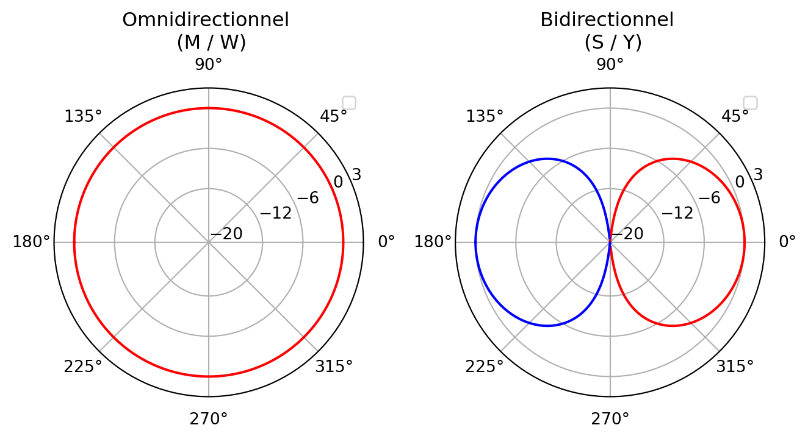
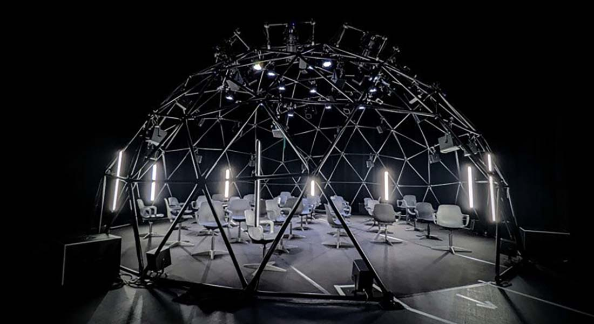
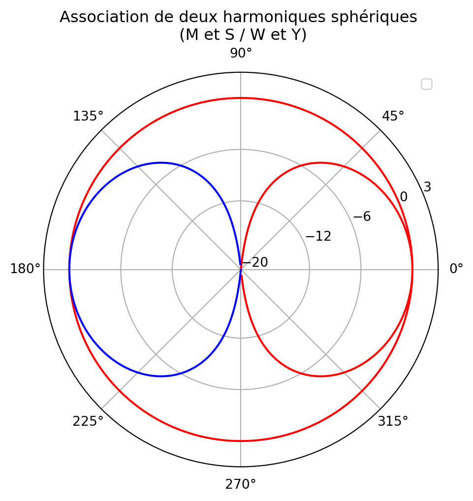
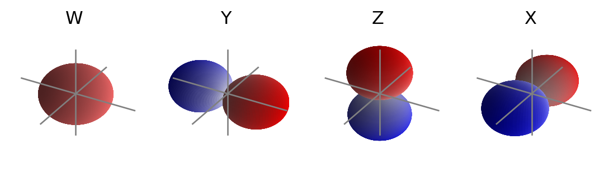
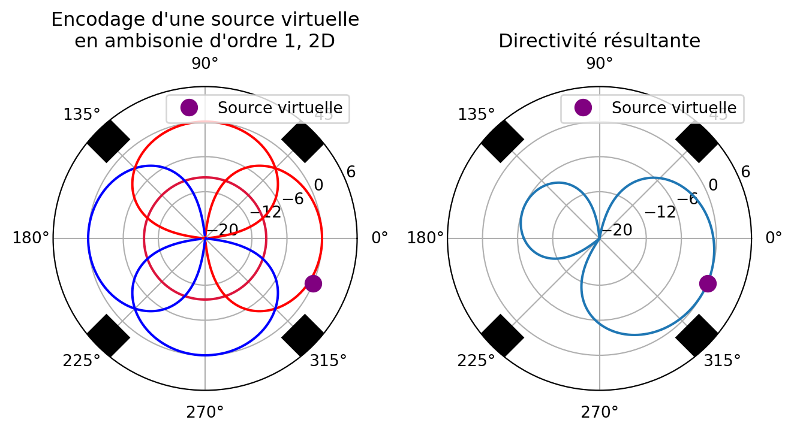

37 L’ambisonique

L’ambisonique (ou ambisonie), s’attache à décrire le champ acoustique en trois dimensions d’un espace donné en un point. C’est à la fois une technique de prise de son, grâce à l’utilisation de microphones particuliers et une solution de panning en post-production. De part son indépendance par rapport au dispositif du système de diffusion, on qualifie parfois un mixage ambisonique de mixage orienté scène. En effet, un signal ambisonique décrit, à l’aide de canaux audio, une scène sonore, et non pas un certain arrangement de haut-parleur (par opposition à l’orienté canal).
L’ambisonie se distingue également des approches plus conventionnelles (approche perceptives du panning usuel) par son approche physique. Nous verrons que dans son fonctionnement, l’ambisonie réalise l’échantillonnage du champ de pression acoustique. Cet échantillonnage peut varier en précision en fonction de l’ordre auquel nous souhaitons travailler.
Nous commencerons par étudier l’ambisonie dit du “premier ordre”, tel que proposé par Michael Gerzon et son équipe dans les années soixante-dix. Seulement ensuite, nous questionnerons l’ambisonie d’ordre plus élevé, apparut au début des années 2000.
37.1 L’ambisonie du premier ordre (FOA)
37.1.1 Captation du champs sonore
L’ambisonie du premier ordre (ou FOA pour First Order Ambisonic) voit le jour sous la forme d’une technique de prise de son. Celle-ci permet l’enregistrement d’un scène sonore sur quatres canaux, que l’on peut ensuite décoder sur n’importe quel système de haut-parleurs.
Pour capturer le champ acoustique en un point, il faut donc s’intéresser au champ acoustique lui-même. Nous l’avons vu à la Section 2.1, sous sa forme acoustique, une onde sonore se caractérise par la variation locale dans le temps de la pression. Pour mesurer la pression en un point, nous pouvons utiliser un microphone omnidirectionnel (également appelé microphone à pression). Ce microphone omnidirectionnel va donc rendre compte a chaque instant du temps de la valeur de la pression. A ce stade, il n’est pas question de parler de spatialisation, la capatation d’une tel capsule étant monophonique.
Il conviendrait donc de mesurer la “direction” du déplacement local des particules d’air. Quelque part, on se demande dans quel sens et quelle direction varie la pression. Pour cela, on cherche à mesurer la vitesse de ce déplacement, et donc la variation de la pression en un point. Pour se faire, on utilise un microphone bidirectionnel (aussi appelé à gradient de pression). Ce microphone va donc mesurer, à chaque un instant du temps, la différence entre la pression entre un point de l’espace et un autre très rapproché. On caractérise donc une variation dans l’espace.
Une capsule bidirectionnelle nous permet de mesurer dans quel axe se déplace les molécules d’air (si les les molécules oscillent dans l’axe du microphone, on obtient un niveau mesurable, si les molécules oscillent sur l’axe normal (à 90°) de l’axe du microphone, on obtient un niveau négligeable). Cependant cela ne nous renseigne pas si la source sonore responsable de la perturbation se trouve plutôt devant ou derrière le microphone. Cependant, si nous associons au même point de l’espace une capsule omnidirectionnelle et une capsule bidirectionnelle, nous allons pouvoir lever cette indétermination.

On constate donc que, selon l’angle d’incidence de la source par rapport aux capsules, celle subit une atténuation (et une modification de la phase si la valeur absolue de l’angle d’incidence est ici supérieur à 90°) dans le canal de captation Y, permettant donc de coder sa position autour du microphone. Le canal W capte la source de la même manière, peut importe son angle d’incidence. Nous venons ici de fabriquer un couple MS (voir Section 16.3.2).
Notre dispositif permet ici de capter des ondes sonores selon un seul axe (ici, Y). Si l’on souhaite étendre ce dispositif pour capter l’espace en trois dimensions, nous serions naturellement tenté d’ajouter deux autres capsules bidirectionnelles supplémentaires.

En pratique, les microphones ambisoniques n’utilisent pas cet arrangement de capsules. En effet, l’encombrement des capsules bidirectionnelles compromet sévèrement la coincidence du système. La qualité d’un tel microphone dépend largement de sa capacité à positionner les capsules avec la plus grande coincidence possible, au risque sinon de déterriorer la précision de localisation dans le haut du spectre. On utilise alors plutôt quatre capsules cardioïde, placé sur les surfaces d’un tétraèdre. Cet arrangement est mathématiquement strictement équivalent à l’utilisation d’une capsule omnidirectionnelle et de trois capsules bidirectionnelles. Seulement, l’encombrement moindres des capsules cardioïdes permet une meilleure coincidence de celles-ci.

On appelle le flux audio en sortie d’un microphone ambisonique du premier order Format-A, dans lequel chaque canal correspond à une capsule précise. Par opposition, on appele généralement Format-B un flux ambisonique du premier ordre encodé, où chaque canal correspond à une des composantes W, X, Y, Z.
Note
L’appellation Format-A se retrouve également pour les ordres supérieurs, même si ces microphones sont rares ! Le terme Format-B est quant à lui, discutable pour les ordre supérieurs.
37.1.2 Synthèse du champs sonore
Nous avons vu qu’un microphone ambisonique nous permet de capturer l’espace acoustique entendu d’un point. Nous pouvons également “synthétiser”, c’est à dire encoder une source sonore monophonique dans un espace acoustique virtuel ambisonique. Pour cela, on utilise simplement des panners ambisoniques.
Pour une incidence donnée de cette sources sonore, le panner va affecter une partie de son énergie aux différentes composantes d’un signal ambisonique (W, X, Y, Z) et une phase particulière (positive ou négative). Il est également possible d’encoder des signaux multicanaux (stéréo, quadriphonie, 5.0). Il s’agit d’une technique très efficace pour adapter un mixage réalisé sur un arrangement de haut-parleurs particuliers vers un autre.
Nous ferons état de ces différentes techniques et des différents panners ambisoniques dans le Chapitre 43 .
37.1.3 Restitution du champs sonore
Une fois le signal enregistré, ou encodé en ambisonique, il convient de le décoder sur un arrangement de haut-parleurs particulier. Cette phase de décodage est peut être la plus complexe à appréhender (et explique très certainement pourquoi l’ambisonique reste à ce jour si peu utilisée).
Illustrons le procédé de décodage en considérant un flux audio ambisonique 2D (W, X, Y) et un système de diffusion quadriphonique.

La figure ci-dessus représente une approche de décodage par projection dite basique.
Pour connaitre la quantité de chaques canaux à emettre sur chaque enceintes, il suffit de regarder l’axe enceinte-centre, et de regarder pour quelle valeur cet axe coupe les harmoniques sphériques. Dans ce cas précis, on trouve :
\[ \begin{array}{ll} L_{front} = W + \frac{1}{\sqrt(2)}(X - Y) \\ R_{front} = W + \frac{1}{\sqrt(2)}(X + Y) \\ L_{back} = W - \frac{1}{\sqrt(2)}(X + Y) \\ R_{back} = W - \frac{1}{\sqrt(2)}(X - Y) \\ \end{array} \]